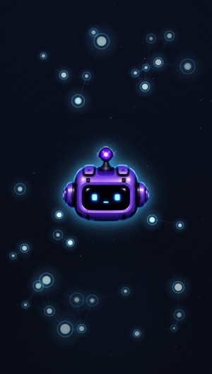
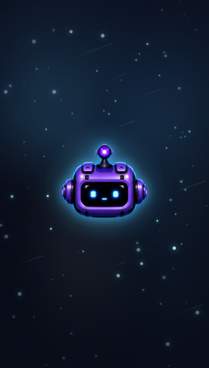
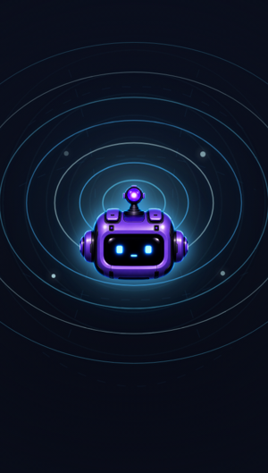
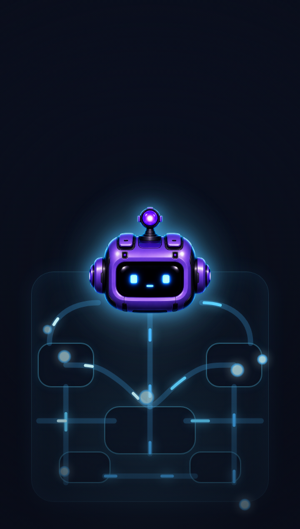
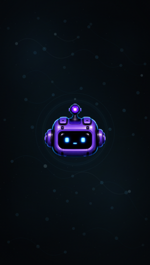
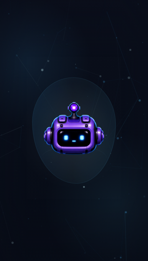

O-24 · 구상 Antigravity · 그림 Codex · 정리 Claude. 썸네일을 누르면 라이브 모션(애니메이션)으로 열립니다. deep-space · 시안 일관 · 살짝 귀여운 톤. 방향 확정 = ⑤(혼합·저자극). ⑤-rev는 밝기 2/3 상향 + 거리·크기·밝기 다양화 개정본 — ⑤와 비교해 확정하세요.

둥근 시안 노드와 연결선이 느린 브리딩으로 이어지는 풍경. 몽글몽글 물방울 노드가 캐릭터 rim과 숨쉬듯 동기화. 저사양=정적 SVG 폴백.

부드러운 파란 성운 + 둥근 별빛이 느린 시차로 떠다님. rim이 성운 반사광처럼 섞이고 동글동글 별이 포근함. 저사양=정적 래스터 폴백.

둥근 머리를 중심으로 공간이 휘어 퍼지는 동심원 파동. 로봇이 콧노래할 때 나는 소리 물결 느낌. 저사양=정적 동심원 폴백.

몸통=화면 컨셉. 둥근 회로와 데이터 흐름이 rim-light로 에너지를 공급하는 내부 뷰. 저사양=흐름 생략 정적 SVG 기판.

신경망 노드 + 옅은 성운을 한 화면에 섞되, 밝기를 낮추고 bloom/glow/blur를 걷어낸 차분·저눈부심 버전. 캐릭터 rim만 은은히 도드라짐.

⑤를 베이스로 밝기를 2/3까지 올리고(글레어는 계속 억제) 광원의 거리·크기·밝기를 크게 다양화 + 랜덤성 강화. 3단 depth로 가까운 건 크고 밝게, 먼 건 작고 흐릿하게. ⑤와 나란히 비교해 보세요.